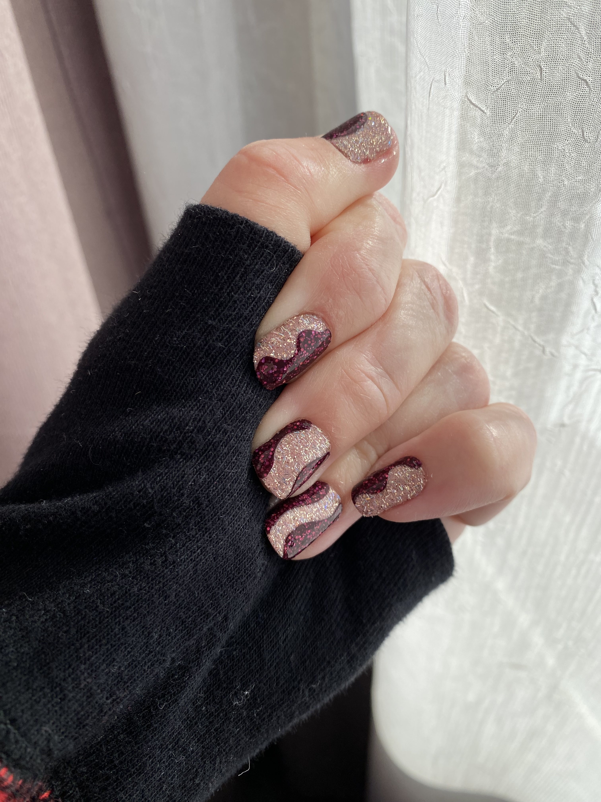
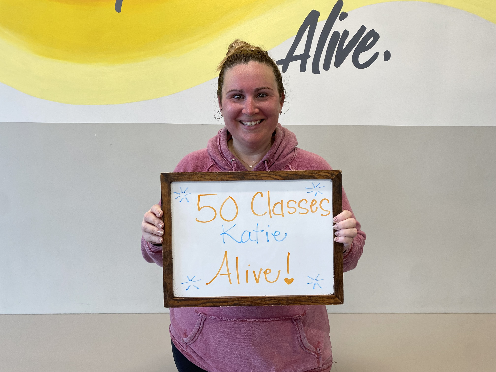
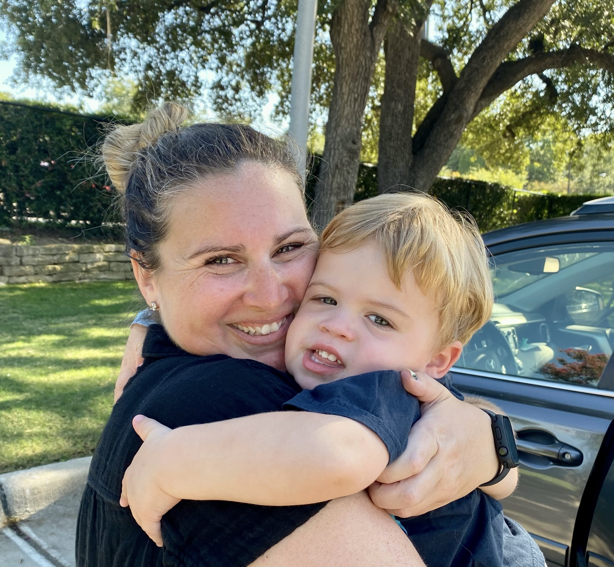

My name is Katie Moore and I am in school at Eastern Kentucky University to be a Library Media Specialist. I love to read, travel and hang out with friends and family. I enjoy reading all kinds of books but I generally enjoy reading fantasy and romance. Some of my favorite authors are Colleen Hoover and Sarah J. Maas. I like to travel on mission trips and for fun. Some of my favorite vacations combine two things I enjoy:
1. History - I am trying to visit every state, as well as all the Presidential Libraries
2. Wine - I keep track of the wines I taste on an app in my phone
I mostly go on these vacations with my mom. I have been to 9 Presidential Libraries and have 4 left. Former President Obama and Trump have not opened yet. We enjoy learning about history together and both enjoy learning and trying new wines.